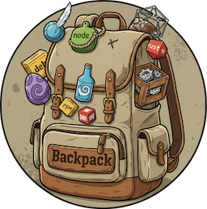

The ultimate artifact bridge for airgapped and high-security networks.
Backpack doesn't just collect artifacts; it hunts them. It recursively resolves every dependency and version until the collection is complete.
Efficiency is key. Backpack builds daily deltas to minimize the transfer load, ensuring only new or changed artifacts are moved.
Designed for horizontal scalability. Easily add new "Processors" or "Collectors" without touching the core infrastructure.
Ready to process and collect from the most popular artifact registries.
Ready to bridge your artifacts?
# Quick deploy with Helm
helm repo add backpack https://linus-berg.github.io/helm-charts/ helm install backpack backpack/backpack